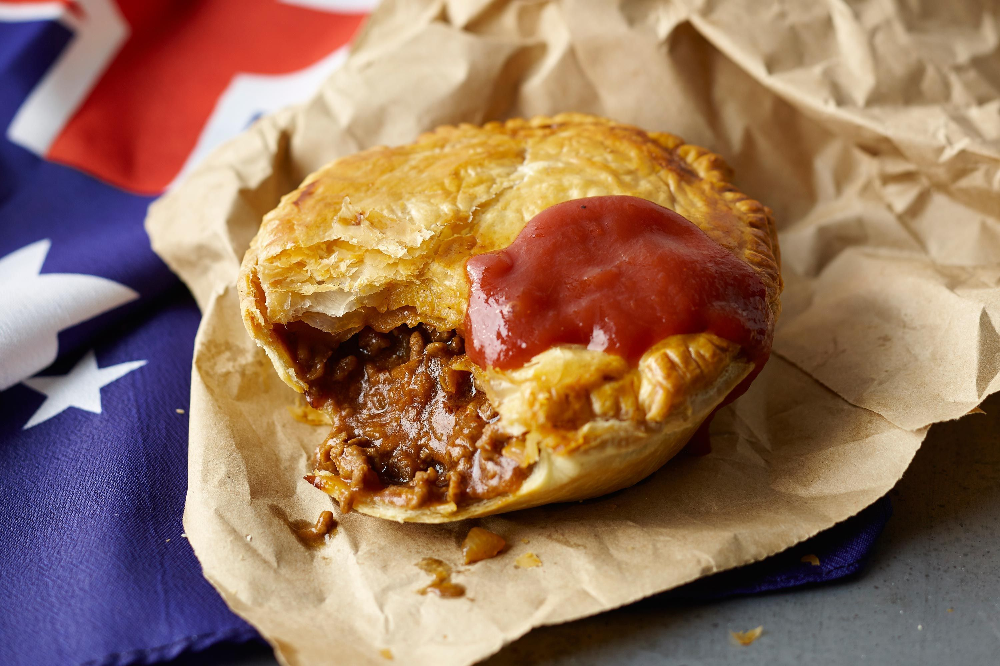

Australian Meat Pie
Ingredients
- 1 lb ground beef
- 1/2 lb ground lamb
- 1 onion, finely chopped
- 2 tbsp flour
- 1 cup beef broth
- 1 tbsp Worcestershire sauce
- 1 tsp thyme
- 1 sheet puff pastry
- 1 egg, beaten (for glazing)
Brown beef and lamb with onions.
Stir in flour and broth.
Roll pastry over filling.
Bake at 375°F for 30 minutes.